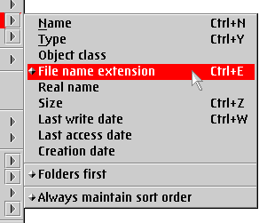

Wichtiger Hinweis: Um Verwirrung zu vermeiden, sind die erweiterten Sortierfunktionen standardm„áig deaktiviert. Sie k”nnen �ber das Objekt "&xwp;-Konfiguration" angeschaltet werden.
Die neuen &xwp;-Sortierfunktionen sind:
Erstens wurden neue Sortierkriteria wie "Objektklasse" und "Dateierweiterung" eingef�hrt.
Zweitens gibt es nun ein neues "šberkriterium", um immer Ordner zuerst einzusortieren, zus„tzlich zum Standardsortierkriterium eines Ordners. Beispielsweise kann man nach Gr”áe sortieren, aber immer noch alle Ordner zuerst einordnen lassen.
F�r all dies wurde das Untermen� "Sortieren" eines jeden Ordnerkontextmen�s folgendermaáen umgearbeitet:

Wie man sehen kann, f�gt &xwp; Men�eintr„ge f�r "Sortierreihenfolge stets beibehalten"
und "Ordner zuerst" f�r schnelle Erreichbarkeit hinzu.
Zus„tzlich l„át sich das Standardsortierkriterium eines bestimmten Ordners schnell „ndern, indem man die Umschalt-Taste ("Shift") gedr�ckt h„lt, w„hrend man ein Sortierkriterium aus dem Men� "Sortieren" ausw„hlt.